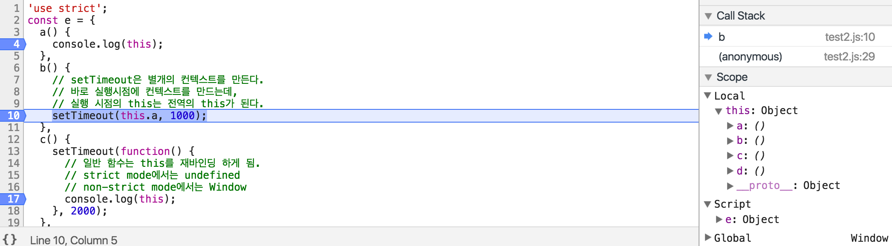
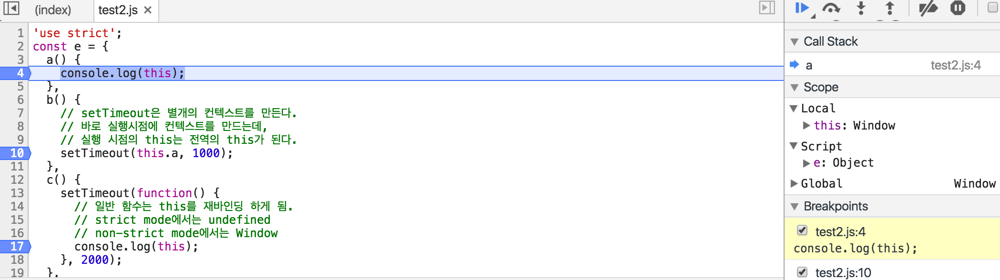
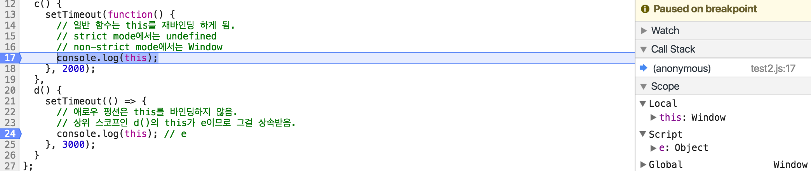
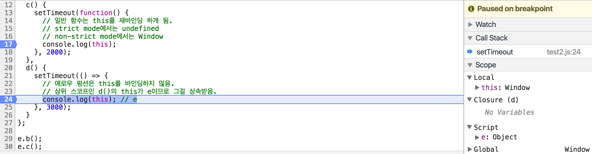

자바스크립트에서 this는 상황에 따라 다른 값을 반환해서 아주 짜증나기 마련이다.
이와 관련해서 하나하나 낱낱이 테스트해보자.
ES5
함수로서 호출할 때
1 | ; |
생성자 함수로서 호출할 때
1 | ; |
객체의 메소드로서 호출할 때
1 | ; |
ES6
새로 나온 애로우 펑션은 this를 바인딩하지 않는다.
call, apply, bind 메소드로도 강제 바인딩이 이루어지지 않는다.
상위 스코프로부터 상속 받을 뿐이다.
일반 함수로서 호출할 때
1 | const a = function() { // 함수로서 호출할 때 |
애로우 펑션으로서 호출할 때
1 | const b = () => { |
클래스
ES6 들어서 생성자 함수를 대체할 녀석으로 클래스가 등장하였다.
이 클래스에서도 this를 낯낯이 파헤쳐보자.1
2
3
4
5
6
7
8
9
10
11
12
13
14
15
16
17
18
19
20
21
22
23
24
25
26
27
28
29
30
31
32
33
34
35
36
37
38
39
40
41
42
43
44
45
46
47
48
49
50
51
52
53
54
55
56
57
58
59
60
61
62
63
64
65
66
67
68
69
70
71
72
73
74
75
76
77
78
79
80
81
82
83
84
85
86
87
88
89
90
91
92
93
94
95
96
97
98
99
100
101
102
103
104
105
106
107
108
109
110
111
112
113
114
115
116
117
118
119
120
121
122
123
124
125
126
127
128
129
130
131
132
133
134
135
136
137
138
139
140
141
142
143
144
145
146
147
148// 함수를 통해 객체의 인스턴스를 생성하던 것 대신에 클래스가 등장함.
// 멤버: 변수와 메소드
// 클래스 멤버: new 생성자 함수를 통해 생성된 인스턴스마다 동일한 값을 가짐.(공유함)
// 클래스의 인스턴스가 생기기 전에도 클래스이름.멤버로 사용 가능.
// static으로 생성된 메소드 및 prototype이 이에 해당.
// 인스턴스 멤버: new 생성자 함수를 통해 생성된 인스턴스마다 다른 값을 가짐.(공유하지 않음)
// 클래스의 인스턴스가 생기기 전에는 사용 불가능, 인스턴스이름.멤버로 사용 가능
// 생성자 함수 내부에 작성된 애들이나 static 키워드를 쓰지 않고 생성한 메소드들이 해당됨.
class C {
constructor() {
// 생성자 함수 외부에서 인스턴스 변수를 선언하지 못한다.
this.a = 1;
this.b = () => {};
// 인스턴스 멤버(변수, 메소드)를 포함하고 있는 객체
// {
// a: 1,
// b: () => {},
// __proto__: { // 상속받는 놈이기 때문에 바로 this.d()와 같이 사용 가능.
// 위에 있는 놈들과 이름이 같다면 위에 있는 놈들이 우선 순위를 가짐.
// d: function() {},
// e: function() {},
// f: function() {},
// g: function() {}
// }
// }
console.log(this);
}
// 클래스 메소드의 this는
// 클래스 멤버(변수, 메소드) 등등을 담고있는 생성자 함수이다.
// 클래스 변수는 클래스 내에서 선언하지 못하고,
// className.prototype.variable = value 와 같이 선언한다.
static a() {
// function, 함수 또한 객체기 때문에 프로퍼티로 접근이 가능하다.
console.log(typeof this);
// new this(); 이렇게 생성자를 호출할 수도 있다.
// __proto__는 상속받는 놈들이기 때문에 바로 this.머시기로 사용할 수 있었으나
// prototype은 상속해주는 놈들이기 때문에 this.prototype.머시기로 사용해야한다.
// {
// a: function() {},
// b: function() {},
// c: function() {},
// prototype: {
// a: 1
// }
// }
console.dir(this);
}
static b() {
const a = function() { // 함수로서 호출하면 this를 재바인딩
// strict mode에서는 undefined
// non-strict mode에서는 Window
console.log(this);
};
a();
}
static c() {
const a = () => { // 애로우 펑션은 this를 상속받음.
// function, 함수 또한 객체기 때문에 프로퍼티로 접근이 가능하다.
console.log(typeof this);
// new this(); 이렇게 생성자를 호출할 수도 있다.
// __proto__는 상속받는 놈들이기 때문에 바로 this.머시기로 사용할 수 있었으나
// prototype은 상속해주는 놈들이기 때문에 this.prototype.머시기로 사용해야한다.
// {
// a: function() {},
// b: function() {},
// c: function() {},
// prototype: {
// a: 1
// }
// }
console.dir(this);
};
a();
}
// 인스턴스 메소드의 this는 생성자 내의 this와 일치한다.
d() {
// 인스턴스 멤버(변수, 메소드)를 포함하고 있는 객체
// {
// a: 1,
// b: () => {},
// __proto__: { // 상속받는 놈이기 때문에 바로 this.d()와 같이 사용 가능.
// 위에 있는 놈들과 이름이 같다면 위에 있는 놈들이 우선 순위를 가짐.
// d: function() {},
// e: function() {},
// f: function() {},
// g: function() {}
// }
// }
console.dir(this);
}
e() {
const a = function() { // 역시 ES5식 함수는 this를 덮어버린다.
// strict mode에서는 undefined
// non-strict mode에서는 Window
console.log(this);
};
a();
}
f() {
const a = () => { // 역시 애로우 펑션은 this를 상속 받음.
// 인스턴스 멤버(변수, 메소드)를 포함하고 있는 객체
// {
// a: 1,
// b: () => {},
// __proto__: { // 상속받는 놈이기 때문에 바로 this.d()와 같이 사용 가능.
// 위에 있는 놈들과 이름이 같다면 위에 있는 놈들이 우선 순위를 가짐.
// d: function() {},
// e: function() {},
// f: function() {},
// g: function() {}
// }
// }
console.log(this);
};
a();
}
g() {
// 인스턴스의 this에 클래스 멤버는 없다.
// 따라서 클래스 멤버를 사용할 수는 없다.
// this.a(); // 클래스 메소드 사용 불가.
this.f(); // 인스턴스 멤버(메소드, 변수)는 사용 가능하다.
}
}
// 클래스 변수는 클래스 내에서 선언하지 못함.
// 레거시 환경을 지원하기 위해
// 프로토타입 방식의 상속을 포기하지 못했기 때문인 걸까??
C.prototype.q = 1;
const c = new C();
C.a();
C.b();
C.c();
c.d();
c.e();
c.f();
c.g();
객체의 메소드로서 호출할 때
ES6에서 객체의 메소드를
key: function() {} 대신에
key() {}와 같이 줄여쓸 수 있게 됐는데 두 개는 동일하다고 봐도 된다.1
2
3
4
5
6
7
8
9
10
11
12
13
14
15
16
17
18
19
20
21
22
23
24
25
26
27
28
29
30
31const d = {
a: function() { // 메소드로서 호출할 때
console.log(this); // d
},
b: () => { // 애로우 펑션은 바로 상위 스코프인 전역의 this를 상속받음.
console.log(this); // Window
},
c() { // a 메소드와 다를 바가 없다.
console.log(this); // d
},
d() { // 메소드로서 호출할 때
const a = function() { // 역시 그냥 펑션은 this를 재바인딩함.
// strict mode에서는 undefined
// non-strict mode에서는 Window
console.log(this);
};
a();
},
e() { // 메소드로서 호출할 때
const a = () => { // 애로우 펑션은 상위 스코프에 있는 this를 상속 받음.
console.log(this); // d
};
a();
}
};
d.a();
d.b();
d.c();
d.d();
d.e();
this를 바인딩하는 콜백함수
1 | // [1].forEach()의 this인 {a: '11'}에 가려진다. |
별도의 컨텍스트를 만드는 함수
setTimeout, setInterval 함수는 함수 선언 시점과 함수 호출 시점에
별개의 컨텍스트를 가지는 대표적인 함수이다.1
2
3
4
5
6
7
8
9
10
11
12
13
14
15
16
17
18
19
20
21
22
23
24
25
26
27
28
29
30const e = {
a() {
console.log(this);
},
b() {
// setTimeout은 별개의 컨텍스트를 만든다.
// 바로 실행시점에 컨텍스트를 만드는데,
// 실행 시점의 this는 전역의 this(Window)가 된다.
setTimeout(this.a, 1000);
},
c() {
setTimeout(function() {
// setTimeout은 별개의 컨텍스트를 만든다.
// 바로 실행시점에 컨텍스트를 만드는데,
// 실행 시점의 this는 전역의 this(Window)가 된다.
console.log(this);
}, 2000);
},
d() {
setTimeout(() => {
// setTimeout은 별개의 컨텍스트를 만든다.
// 바로 실행시점에 컨텍스트를 만드는데,
// 실행 시점의 this는 전역의 this(Window)가 된다.
// 하지만 애로우 펑션을 쓰면 클로저가 형성된다.
// 실행 시점의 this(Window)와 선언 시점의 this(e 객체)가 달라서
// 그것을 동기화(?)시키기 위해서 클로저가 형성되는 게 아닐까...싶다.
console.log(this); // e
}, 3000);
}
};

함수 선언 시점의 this는 e object이다.

하지만 함수 실행 시점의 this는 window가 된다.
바로 setTimeout이 별도의 컨텍스트를 만들기 때문이다.

함수로 래핑해봐도 마찬가지다.

하지만 애로우 펑션으로 래핑하면 클로저를 형성해서 우리가 원하는 결과를 얻어낼 수 있다.